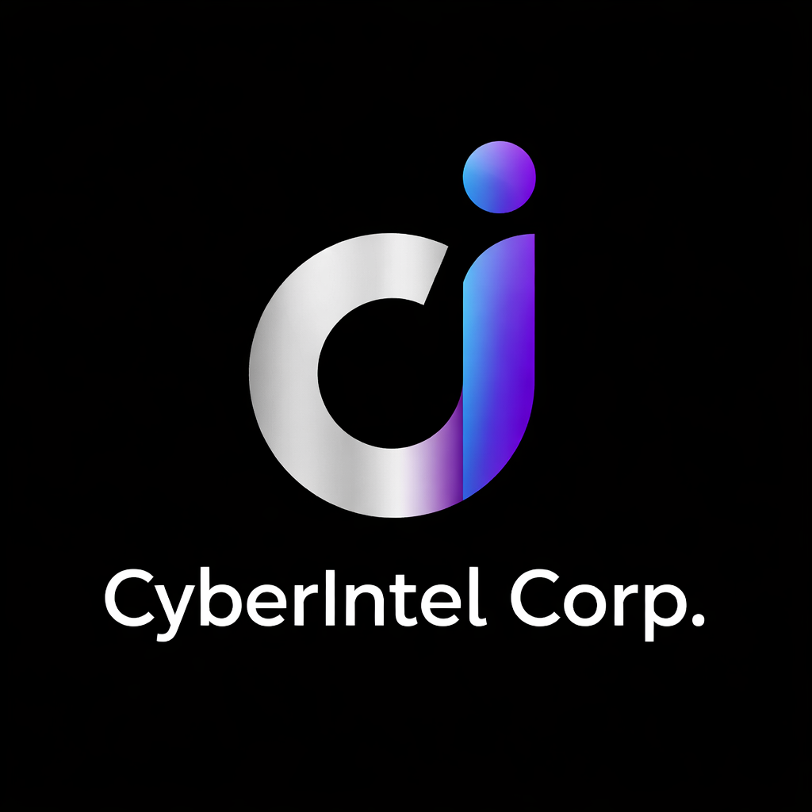

Actionable Cyber Threat Intelligence for Modern Organizations
CyberIntel Corp is a cybersecurity-focused startup established to provide proactive threat intelligence, cybersecurity training, and strategic security advisory services to organizations. The company aims to address the increasing complexity of cyber threats by integrating advanced analytics, threat research, and industry-standard security frameworks. CyberIntel Corp emphasizes intelligence-driven security operations, workforce training, and risk-based cybersecurity governance to enhance organizational resilience. Through a combination of technical expertise, continuous learning programs, and strategic advisory services, the organization seeks to support enterprises in improving their cybersecurity posture, reducing human and technical vulnerabilities, and strengthening incident response and risk management capabilities.
Our approach combines advanced analytics, machine learning, and human expertise.
To become a globally trusted cybersecurity intelligence provider that enables organizations to proactively defend against evolving digital threats.
Our mission is to deliver actionable threat intelligence, advanced security training, and strategic cybersecurity solutions that help organizations detect, prevent, and respond to cyber threats effectively.
Concept development and cybersecurity research initiated by founding team.
CyberIntel Corp established as a cybersecurity intelligence and training startup.
Development of threat intelligence platform, training modules, and advisory services.
Chief Executive Officer (CEO)
Leads strategic vision, business development, and organizational growth.
Cybersecurity Analyst
Specializes in threat intelligence, SOC operations, and incident response.
Security Engineer
Designs security architectures and implements cybersecurity tools and solutions.
Security Research Engineer
Conducts vulnerability research, penetration testing, and malware analysis.
Real-time feeds, dark web monitoring, adversary profiling.
Rapid containment, forensic investigation, and recovery from cyber incidents.
Learn MoreMITRE ATT&CK workshops and security awareness.
Risk assessments and compliance support.
Collection: Logs, sensors, open-source, dark web
Analysis: Pattern recognition and expert review
Delivery: Dashboards and alerts